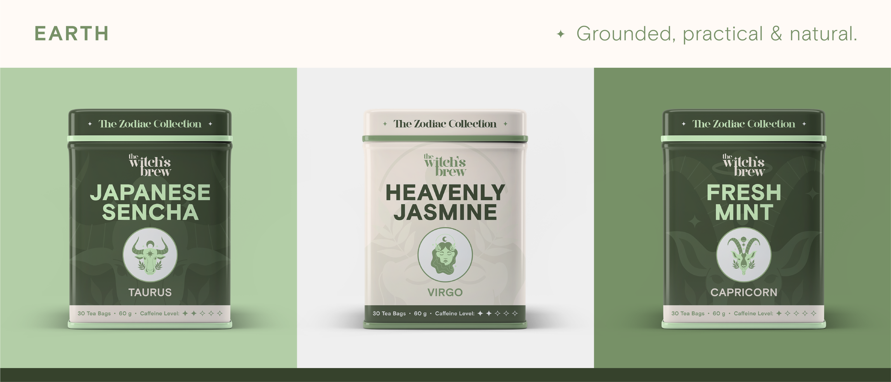
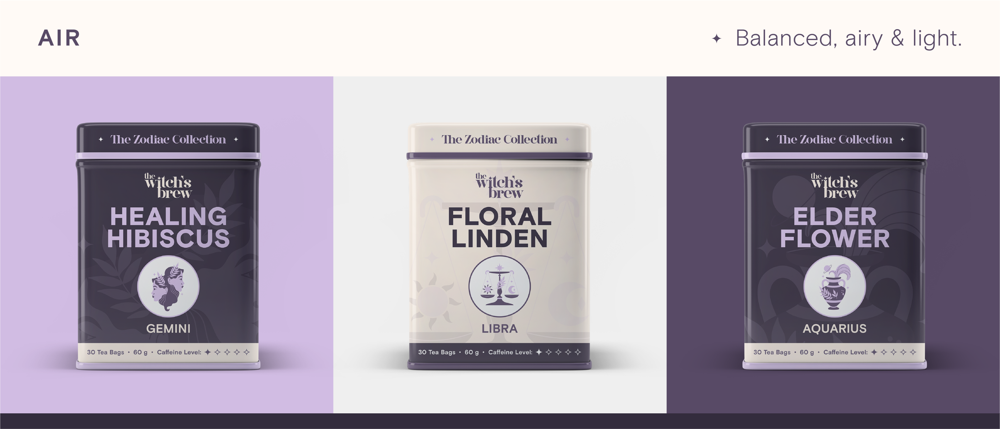
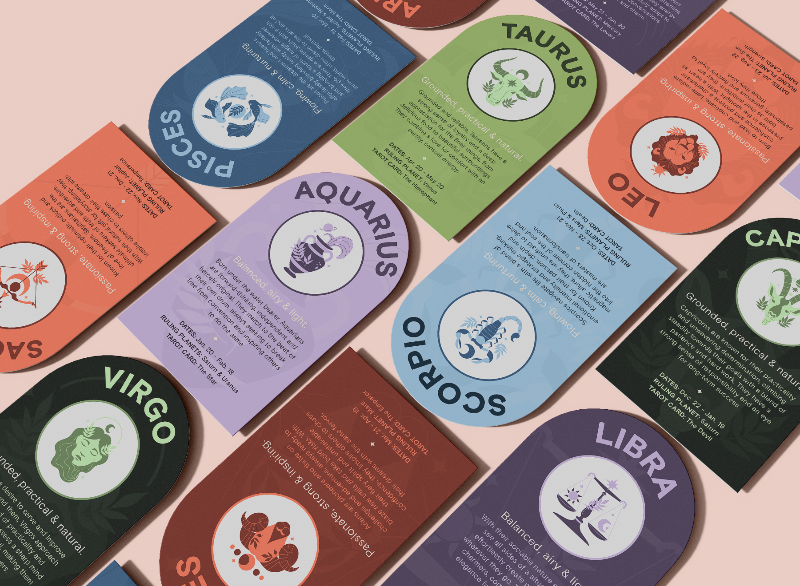
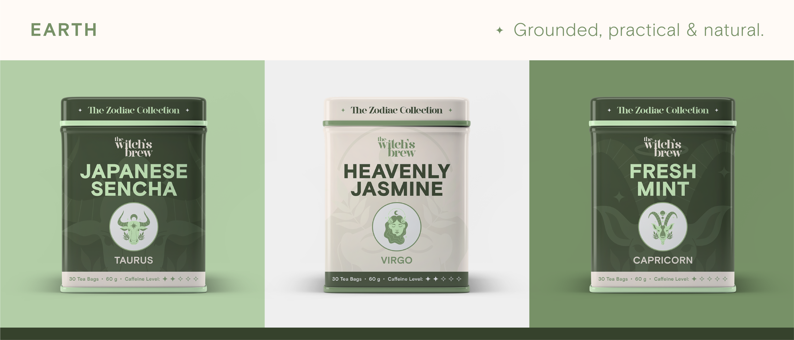
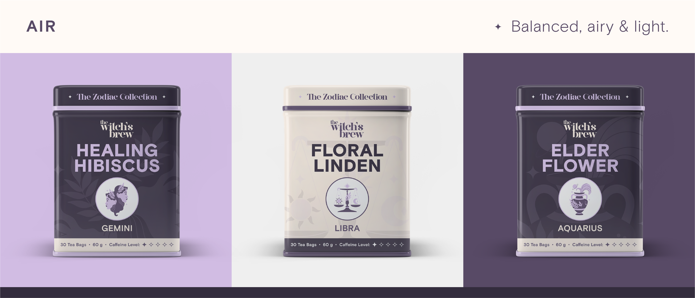
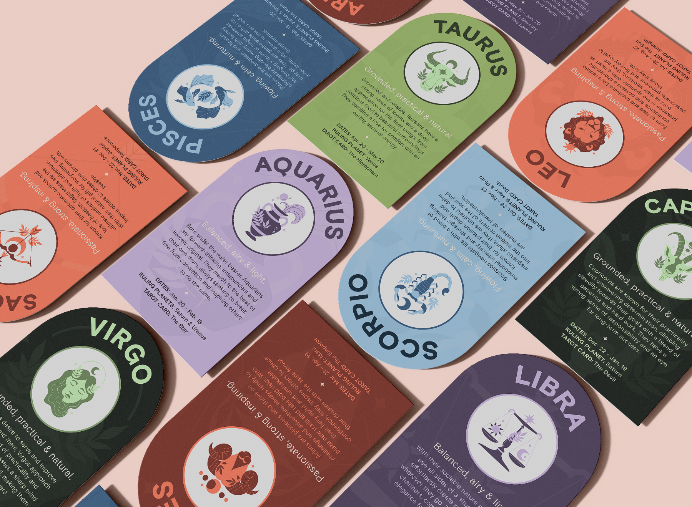

The Witch's Brew.

The Witch's Brew is a playful and creative tea brand that draws from astrology and spirituality. Encouraging drinkers to harness the power of the cosmos, it infuses the herbal goodness of tea to inspire positive energy in one's life. The brand's sister line, the Zodiac Collection, is a set of twelve teas designed for each sign of the zodiac.
Creating a tea brand like The Witch's Brew presented a unique opportunity to explore packaging design and typography hierarchies for consumers. With a topic as ambiguous as astrology, I was challenged to create a visual style that not only expressed tea as a natural remedy, but represented the zodiac signs as types of tea. To solve this, I matched signs to their cardinal elements (earth, air, water, fire) to determine which category of tea would be suitable (ex. earth signs = green teas, fire signs = black teas).
The brand is aimed at two generational demographics that research shows astrology is popular with: Gen Z and Millennials. I viewed The Witch's Brew as an extension of not only the growing astrology community, but of society's emphasis on self-care and healing from within — whether it be physically, mentally or emotionally. Astrology is shown to be a path to self-discovery for those who feel a strong connection to the universe as an explanation for events around them or in their own lives.
And of course, who doesn't want a delicious tea made specially for them? Cheers! 🍵


 






(Crafted with love & patience)